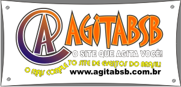

Você pode criar um efeito de mudança de cor ao passar o mouse em cima de uma frase usando HTML e CSS.
HTML é uma linguagem de marcação usada para estruturar o conteúdo de uma página web. Ele define os elementos que compõem o conteúdo, como textos, imagens, links, e formulários. CSS é usado para estilizar os elementos do HTML, controlando o layout, cores, fontes e espaçamentos. Ele aplica estilos através de seletores e propriedades.
O site agitabsb.com.br é uma plataforma dedicada à divulgação de eventos e atrações em Brasília. Embora não haja informações detalhadas sobre sua fundação ou histórico específico, o site é conhecido por promover shows e festivais na região. Por exemplo, o Agita Brasília anunciou o retorno da banda Roupa Nova ao palco do Centro de Convenções Ulysses em 27 de abril, com o show inédito "40 anos de sucessos". Além disso, o site compartilha informações sobre eventos futuros, como o VillaMix, que promete marcar a história dos festivais no Brasil mais uma vez.
